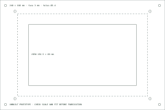

PORTABLE SYSTEMS / DEVELOPMENT BENCH
Your field desk.
Know its limits.
Read system signals. Plan a power budget.
Inspect the enclosure
before you build.
01 / SYSTEM SIGNALS
One view of the local system.
Connecting
Requesting the first snapshot…
Temperature history
0 received samples
60 °C30 °C
Horizontal axis: received-sample order, not elapsed wall time. Missing values leave gaps. Up to 60 samples stay in this page. The synthetic trace repeats every 60 seconds.
02 / POWER PLANNING
Energy in. Time out.
A constant-load calculation from declared values. This is not battery telemetry or a measured endurance test.
Usable model runtime—After efficiency and reserve
Full model runtime—Before the energy reserve
Enter declared values to compare load with a nominal supply rating.
Peak load, voltage drop, temperature, pack ageing, cable limits, and actual converter behaviour require measurement. The sample 74 Wh value does not describe a tested pack.
03 / ENCLOSURE STUDY
Open the drawing.
Parametric source for a Raspberry Pi 4 and the official 7-inch Touch Display 2. Units are millimetres; measured fit is pending.

- Outer enclosure
- 240 × 160 × 70 mm
- Viewing window
- 156.5 × 89 mm
- Wall / face
- 3 mm / 3 mm
- Clearance holes
- 8 × Ø3.4 mm

The Pi uses the display manufacturer's rear mounts. Retention, cable access, material, printing, and cooling still need physical checks. No CAD render or fabrication-ready fit is claimed.